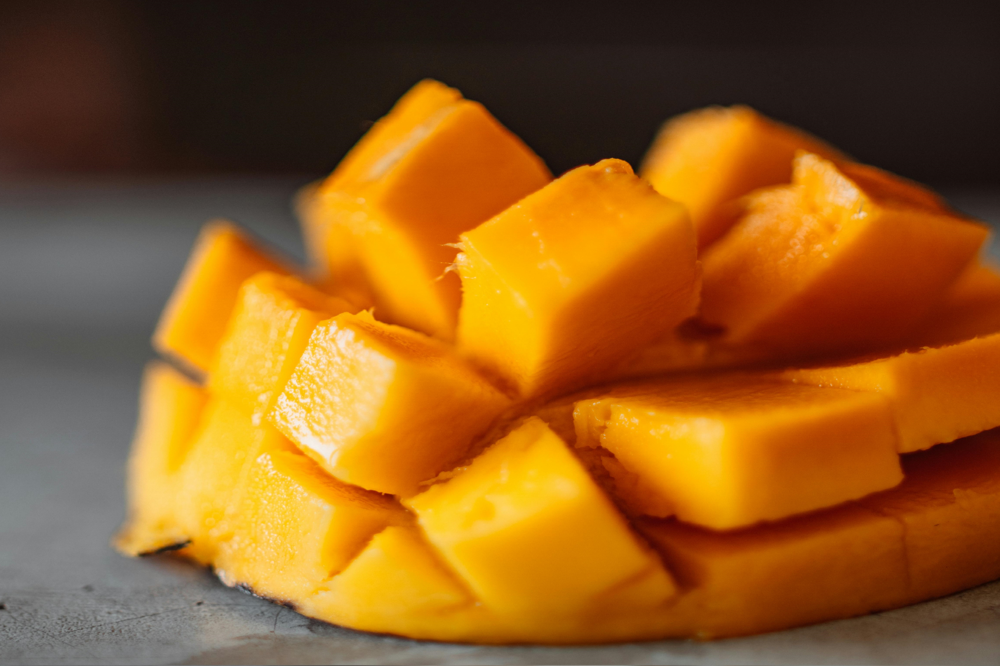

Story about Harumanis Mango
The Harumanis mango, scientifically known as Mangifera indica Linn, is a local gem for the northernmost state in Malaysia, which is Perlis. Harumanis mangoes are known for their unique aroma, sweetness, and smooth texture. It's a famous fruit among Malaysians and can be enjoyed in various ways, such as fresh, paired with sticky rice, or blended into a refreshing juice.

In 1979, the Orchard Rehabilitation Project was initiated to improve agriculture for each region. Unprofitable trees were cut down and replaced with Harumanis trees, and one of the places selected for planting these trees was Kampung Santan, Padang Pauh, Perlis. The planting of Harumanis trees gained popularity, and people continued planting them starting in 1983. New orchards were opened by clearing abandoned forests. The Paya Kelubi Orchard Project and Kele Bukit Kedak Project were notable examples of group planting efforts during this time. By 1990, Harumanis covered 1,667 hectares, but challenges such as pests, diseases, and neglect arose, reducing the mangoes produced by the trees. To address these issues, the Agriculture Department launched programs like Gema Harumanis in 2007 and the Agricultural Development Focus Area initiative starting in 2009.
Harumanis is a unique plant that requires a dry season from January to March for its flowers to bloom. Its harvest season lasts only one to one and a half months. Each tree can produce up to 300 mangoes, which are carefully graded, cleaned, and ripened to perfection. Its outstanding quality has even made it popular in international markets like Japan, further cementing its status as one of Malaysia’s finest exports.
